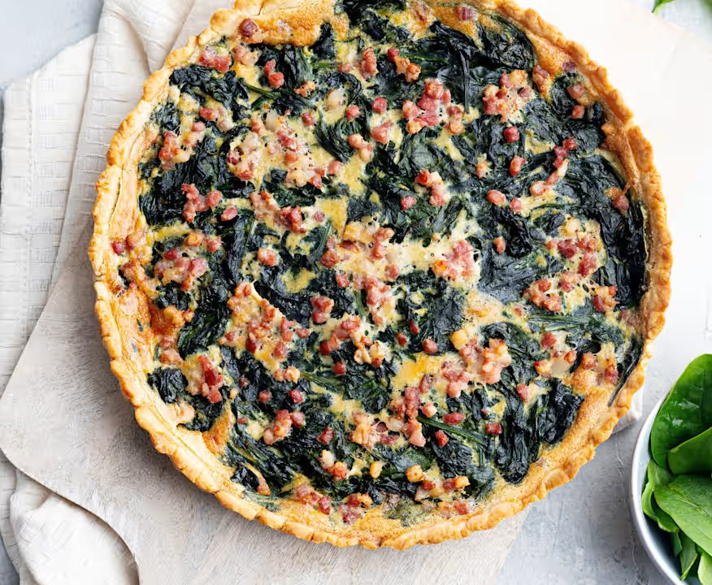

Quiche épinards et lardons
Ingrédients
- 200 g de farine
- 110 g d'huile d'olive
- 60 g d'eau froide
- 1.5 c. à c. de sel
- 1 gousse d'ail
- 450 g d'épinards frais
- 0.5 c. à c. de poivre
- 200 g de crème de soja
- 2 oeufs
- 1 c. à c. de muscade
- 70 g de lardons

Préparation
Étape 1
Mixer 200 g de farine, 80g des 110 g d'huile d'olive, 60 g d'eau froide et 1/2 cac du 1.5 c. à c. de sel 25 sec/vitesse 5.
Former une boule, l’aplatir, filmer et laisser reposer 30min au frais.
Étape 2
Hacher 1 gousse d'ail 3 sec/vitesse 6. Ajouter le reste d’huile (30g) et rissoler 3 min/120ºC/vitesse 1.
Étape 3
Ajouter 300g des 450 g d'épinards frais, 1/2 cac de sel et 0.5 c. à c. de poivre. Cuire 3 min/100ºC/sens inverse/vitesse 1.5.
Ajouter le reste des épinards et cuire 2 min/100ºC/sens inverse/vitesse 1.5. Égoutter et essorer dans le panier.
Étape 4
Préchauffer le four à 200ºC. Mixer 200 g de crème de soja, 2 oeufs, 1 c. à c. de muscade et le reste du sel 20 sec/vitesse 5.
Étape 5
Étaler la pâte et foncer un moule huilé (Ø 26 cm). Verser l’appareil, parsemer d’épinards et de 70 g de lardons. Cuire 30min à 200ºC.
Conseils
- Remplacer la crème de soja par de la crème liquide ou une autre crème végétale.
- Version végétarienne : des pignons à la place des lardons.